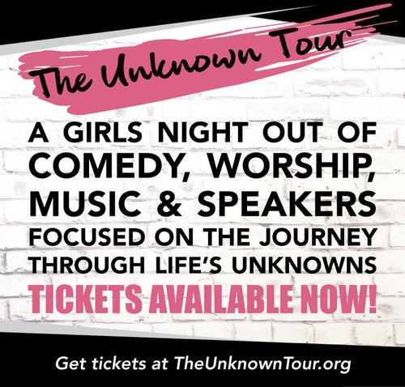

Adult Ministries

Women
Encouraging and equipping women to embrace every season of their life by developing Christ-like attitudes toward circumstances and life transitions.
"Is there any encouragement from belonging to Christ? Any comfort from his love? Any fellowship together in the Spirit? Are your hearts tender and compassionate? Then make me truly happy by agreeing wholeheartedly with each other, loving one another, and working together with one mind and purpose. Don't be selfish; don't try to impress others. Be humble, thinking of others as better than yourselves. Don't look out only for your own interests, but take an interest in others, too."
THE UNKNOWN TOUR
at Victory Church, E3443 Apple Tree Lane, Waupaca, WI 54981
The Unknown Tour has two professional Christian comedians, one keynote speaker & worship! This is a fun girls night out. Invite your friends and join us!
Tickets start at $22 plus fees and can only be purchased online.
Group rates available. Tickets were sold out last year, so plan early and see you there.
Men
Our goal is to teach men how to be Godly leaders, husbands and fathers in a world that is desperate for genuine leadership. Through regular fellowship, we seek together to hear God's voice, and then set out to do His will. Through teaching from the Word, both from within Victory Church and guest speakers, we focus on issues that Christian men face in today's world We are beginning the “Iron Sharpens Iron” process by:
Providing a setting to establish and strengthen relationships.
Providing opportunity for mentoring and holding each other up as Godly men.
Providing support and accountability to each other as men, to our families, our leadership and our church.

Student Ministries
Youth
"TO CREATE AN ENVIRONMENT IN WHICH YOUTH DISCOVER THEIR IDENTITY IN CHRIST"
Grades 7th - 12th
The middle and high school years are when you learn that church can be fun and transformative at the same time. Our heart is to make Victory Youth the kind of place where no one stands alone. Come exactly as you are!
At Victory Youth, we are committed to building a community of students passionately following Jesus in a way that compels others to follow Him. Students are supported and challenged in their own spiritual journey through worship, relevant messages and fellowship.
WAUPACA CAMPUS
On Wednesday nights at 6:30 p.m.
NEW LONDON CAMPUS
On Wednesday nights at 6:30 p.m.
For all youth questions:
Contact: Adam Nelson, Youth Minister
NLyouth@victorychurchwi.com
📞(715) 347-4299
Preteens
"TO CREATE AN ENVIRONMENT IN WHICH PRE-TEENS DISCOVER THE POWER OF GOD IN A PERSONAL WAY"
Grades 4th - 6th
Our Sunday and Wednesday Programs are designed to help your child develop a Christ-like character through Bible study, prayer, the Holy Spirit's guidance and a personal relationship with Jesus Christ.
Our Sunday morning Preteen class focuses on Bible study and discussion. Wednesday's Preteen class consists of a time of worship with the youth group, Bible study, large group games, and snacks.
Our dedicated team is composed of trained volunteers who are screened, and above all, love working with your kids!
WAUPACA CAMPUS
On Wednesday nights at 6:30 p.m. Sundays at the 8:30 a.m. and the 10:15 a.m. services. September through May.
On Sundays the Pre-Teens will be released from the main service after our worship time.
NEW LONDON CAMPUS
On Wednesday nights at 6:30 p.m.
September through May.
For all youth questions:
Contact: Paul Roemer, Youth Minister
waupacayouth@victorychurchwi.com
📞(715) 258-9661
Children's Ministries
Kid's Church
"TO CREATE AN ENVIRONMENT IN WHICH CHILDREN DISCOVER THE GOD OF THE BIBLE"
Ages 4 - 8
Here at Victory Church, we feel that learning about our awesome God and Savior should be fun! So while you parents are enjoying worship and a relevant sermon, your kids are learning too! We strive to keep our classroom time inviting, interactive and exciting. Using music, costumes, skits, games, movies, small group prayer time, and of course, the Bible. We keep our students asking when they can come back to church again! We offer a variety of classes specifically geared for children!
WAUPACA CAMPUS
8:30 a.m. & 10:15 a.m. Sunday Service
NEW LONDON CAMPUS
9:30 a.m. Sunday Services
For all children's questions:
Contact: Carrie Rieck
carrierieck@gmail.com
📞(715) 498-1086
Also Contant:
Contact: Heather Harley
NLchildren@gmail.com
📞(920) 205-8507
Wednesday Night Kids
"TO CREATE AN ENVIRONMENT IN WHICH CHILDREN DISCOVER THE GOD OF THE BIBLE"
Grades K - 3rd
Students, K-3, will discover the amazing God of the Bible and how His Word applies to our lives today. They'll learn through engaging Bible reading, videos, games and hands on activities.
WAUPACA CAMPUS
On Wednesday nights at 6:30 p.m. - 8:30 p.m.
September through May.
NEW LONDON CAMPUS
N/A at this time.
For all children's questions:
Contact: Carrie Rieck
carrierieck@gmail.com
📞(715) 498-1086
Also Contant:
Contact: Heather Harley
NLchildren@gmail.com
📞(920) 205-8507
Other Ministries
J.O.Y (Just Older Youth)
"To encourage those J.O.Y to participate in activities that foster spiritual growth and health and to promote wholesome fellowship events."
Ages 55+
For all questions:Contact: Colleen Spindler
office@victorychurchwi.com
📞(715) 258-9661
Worship Arts
"CELEBRATING JESUS CHRIST THROUGH THE WORSHIP ARTS"
The primary reason we meet together is to focus our attention on God, giving Him our praise and worship, and receiving His blessing and inspiration. Each of these occasions are a special time of spiritual refreshment. Your presence and participation adds to the worship of our Lord Jesus Christ.
Worship is intended to give you the opportunity to express your heart and feelings to our Lord. For this reason our worship leaders select their songs very carefully, bearing in mind both the tempo and the words. We use a computer projected screen for the lyrics and strive to minister to every age group within the congregation. We hope this is what you will experience today, and we certainly would like to see you again very soon.
Breana Carey invites you to get involved. If you have a musical talent, she would enjoy exploring that with you.
For all questions:
Contact: Bre Carey
bre@victorychurchwi.com
📞(715) 894-7115